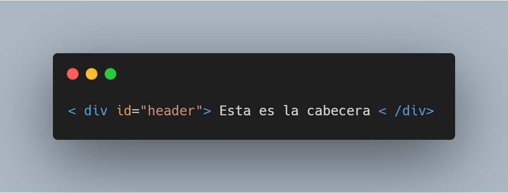
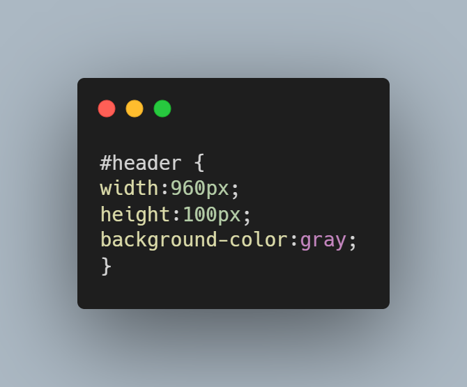
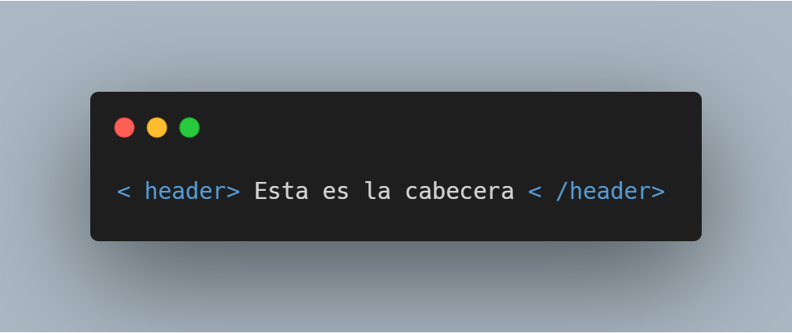
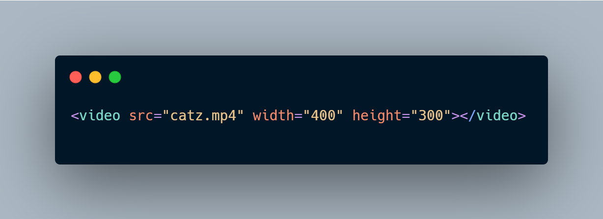
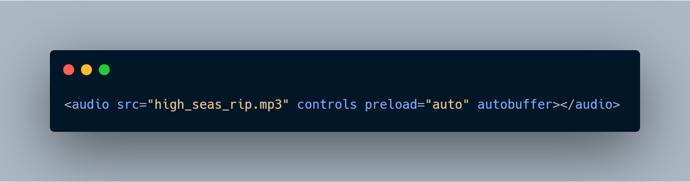
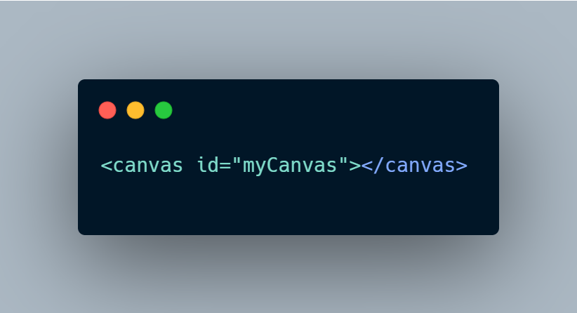
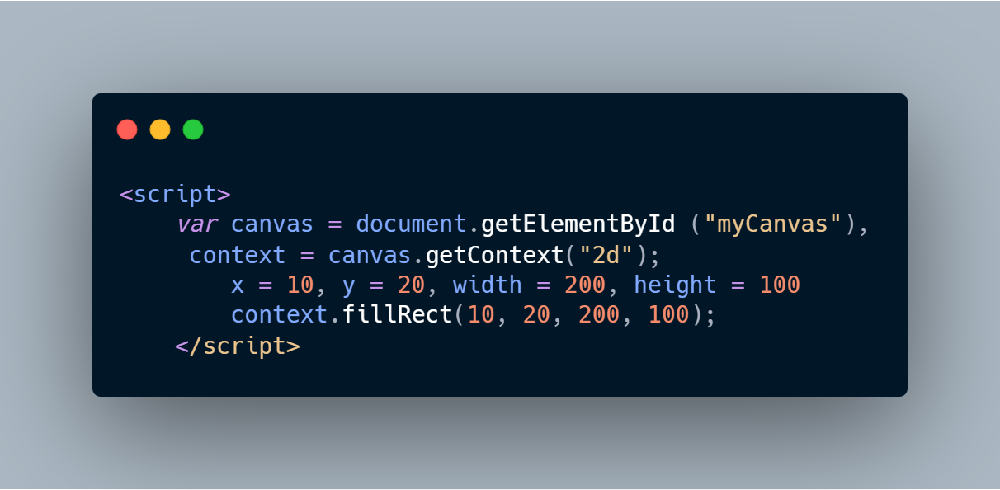

OBJETIVO DE HTML5:
Se puede mejorar el lenguaje de la web, utilizando los nuevos comandos y nuevas etiquetas que han llegado
en estos tiempos, con eso sería mas sencillo y avanzado realizar páginas web con los nuevos elementos
disponibles, para eso se identifican las características de html5, con elementos multimedia, canvas,
formularios web y tablas avanzadas. Comprender los beneficios del html5 para diseñadores, usuarios,
aparte usarlos en las diferentes empresas.
DEFINICION DE HTML5:
Se define como la quinta versión de HTML. Definen los nuevos estándares de desarrollo web, rediseñando el
código para resolver problemas y actualizándolo así a nuevas necesidades, esto puede incorporar muchas
características nuevas y proporciona una plataforma de desarrollo de complejas aplicaciones web. Esta
versión nos permite una mayor interacción entre nuestras páginas web y el contenido media como video,
audio, iframes y mensaje de voz así como una mayor facilidad a la hora de codificar nuestro diseño
básico. HyperText, cuyo significado es hipertexto, que no es más que un texto que enlaza con otros
contenidos, que pueden ser otro texto u otro archivo. Esto es la base del funcionamiento de la web tal y
como la conocemos, que no es más que páginas y recursos interconectados. Markup, que significa marca o
etiqueta, ya que todas las páginas web están construidas en base a etiquetas, desde las primeras
versiones hasta las últimas etiquetas de HTML5.
CARACTERÍSTICAS:
Nuevas etiquetas semánticas para estructurar los documentos HTML, destinadas a remplazar la necesidad de
tener una etiqueta (div) que identifique cada bloque de la página.
La integración de gráficos vectoriales escalables (SVG) en sustitución de los genéricos (object), y un
nuevo elemento (canvas) que nos permite dibujar en él.
El cambio, redefinición o estandarización de elementos.
MATHML para formulas matemáticas
Almacenamiento local en el lado del cliente.
Gracias al almacenamiento local (no oficialmente HTML5, pero agrupado por conveniencia), podemos hacer
que los navegadores avanzados "recuerden" lo que escribimos, incluso después de que el navegador se
cierra o se actualiza.
La historia de HTML5:
HTML4, que se dió por cerrado en 1998, este erá la base de la gran mayoría de las páginas web que podemos
ver hoy en día
Los diseñadores usaron la version HTML4.01 por varios años de manera efectiva con el CSS y con JavaScript
para añadir interacción.
Cuando acabo el HTML4.01 le siguió XHMTL 1.0 el cual era más escricto que su predecesor ya que este se
tenía que escribir todo en minúsculas. Aunque poco despues se creo XHTML 2.0 como resultado de mejoras
en el lenguaje.
En el 2004 un grupo independiente llamado WHATWG(Web Hypertext Application Technology Working Group)
trabajaron en mejorar el HTML y dos años y medio después en 2006 se anunció que W3C y WHATWG trabajarían
juntos en mejorar el HTML y como resultado el desarrollor de XHTML2.0 fue abandonado y el HTML 4.0 se
reformo a HTML5.
HTML5 extiende lo que puede hacer una página web:
Hasta el día de hoy HTML no tiene la capacidad de reproducir contenidos multimedias (audio o vídeo) por
si mismo, si no que ocupa un complemetno como Adobe® Flash® o Microsoft® Silverlight®. Tampoco tiene la
capacidad de almacenar datos en el ordenador del usuario. No existe un formato de dibujo nativo en HTML.
Todos los gráficos y animaciones se ofercen gracias a complementos como Adobe Flash, Java, Microsoft
Silverlight y otros. Pero esto no limita a HTML5 si no que ayuda a que los usuarios den un mejor
rendimiento.
Lenguaje de HTML5:
Este lenguaje incorpora algunas etiquetas nuevas para que la estructrua de la página web sea más lógica y
funcional, antes la estructura de un página web dependía de las etiquetas < div>, asociadas a una clase
CSS o un ID.
Por ejemplo en HTML 4.0 es acaptado definir la cabecera de una página web de esta forma:

En este caso, el código de ID de CSS sirve para definir la anchura y altura de la cabecera así como su
color de fondo. En CSS podríamos tener algo así.

El ID de header es arbitrario. Algunos diseñadores usan nombres como masthead, topsection, o box. En
HTML5 existe una etiqueta llamada < header> que sustituye el < div> así que la sintaxis es más lógica y
coherente:

A este ejemplo ya le podemos añadir las propiedades de estilo, ancho, color de fondo,etc. que queramos.
La difrencia entre estos dos ejemplos anteriores se entiende así: el # header se refiere a un atributo ID
de CSS y en el segundo caso utilizamos un sector header que es una novedad de HTML5 y dispone elementos
nuevos aparte de éste como < footer>, < nav>, < section>, < aside>, y < article>. Estos nombres se basan
en los que se vienen utilizando habitualmente para distinguir secciones dentro de la
página web. El objetivo de los nuevos elementos de HTML5 no es otro más que evitar
una excesiva dependencia de las etiquetas < div> y sustituirlas por una páginas más
consistente y legible. Como se puede ver HTML5 no sustituye ningún elemento si
no que añade nuevos para organizar y mejorar el trabajo en las páginas web.
Los elementos < video>, < audio> y < canvas>
La especificación HTML5 incluye etiquetas que nos permiten integrar contenidos multimedia sin necesidad
de complementos de navegador. Las etiquetas < video> y < audio> sirven para integrar video y audio en
las páginas web de la misma forma que actualmente se hace con los archivos de imagen utilizando
la etiqueta < img>. La etiqueta < canvas> dota al lenguaje HTML de un formato nativo para el
dibujo y la animación. Esta etiqueta puede servir, además, como plataforma alternativa
para los gráficos y animaciones que hoy en día podemos ver en películas Flash. (Nota,
los elementos Flash ya no reciben soporte y se consideran obsoletos)
Elementos < video> y < audio> para incorporar contenidos multimedia
La estructura necesaria para incorporar contenidos de audio o vídeo a una página web es bastante
sencilla, como podemos ver a continuación en el siguiente ejemplo

Insertar un archivo de audio mp3 en la página se hace de forma similar. En el caso del audio y el vídeo
podemos añadirle también controles de reproducción y la posibilidad de precarga, utilizando los
atributos controls, preload, y autobuffer:

El elemento < canvas> para dibujo y animación
El elemento canvas funciona a modo de superficie de dibujo dentro de una página web .Dentro de esta
superficie de dibujo podemos crear formas con colores, gradientes y patrones de relleno. Podemos
manipular los pixels de forma interactiva en pantalla, mostrar textos y exportar los contenidos hacia
archivos de imagen estática, como .PNG. Podemos también utilizar JavaScript o las nuevas funciones de
animación de CSS3 para que los objetos que creamos puedan moverse, desaparecer, cambiar de tamaño, etc.

JavaScript se encarga de todo el trabajo y nos ofrece un contexto para el objeto creado. Por ejemplo,
para crear uno de los objetos más sencillos dentro del canvas, un rectángulo negro, el código necesario
puede ser como este:

Con estas pocas líneas creamos un rectángulo de color negro con unas dimensiones concretas. El código
puede parecer excesivo para un resultado tan simple, pero la etiqueta canvas se limita a presentar el
código dentro de un documento HTML y este modelo nos aporta una serie de ventajas. Entre los usos
previsibles están elementos de la interfaz de usuario, como controles de reproducción, elementos de
ilustración que se pueden animar o visualización dinámica de datos como diagramas y gráficos.
Formularios web
Los nuevos elementos de formulario de HTML, cuando se implementen, harán que el trabajo con formularios
sea más sencillo que ahora. Por ejemplo, muchos diseñadores web necesitan crear formularios en donde los
datos tienen que comprobarse antes de enviarlos al servidor.

¿Qué es una API?
Las APIs (Application Programming Interfaces) son una forma de crear aplicaciones utilizando componentes
preconfigurados cuyo uso no se restringe a la web, ni siquiera a los lenguajes de scripting. Sitios web
como Twitter o YouTube entre otros, ofrecen APIs al público de manera que los diseñadores y
desarrolladores pueden con ellas integrar algunas de sus funcionalidades dentro de sus propios sitios
web.
Web Workers
Web Workers es otra API que se suele considerar de la familia HTML5. Web Workers es un marco de
programación que resuelve problemas de rendimiento de los navegadores. Al acceder a aplicaciones web
avanzadas, como las de mapas o aquellas que generan gráficos o diagramas al entrar en la página web, se
inician ciertas operaciones de computación que consumen una gran cantidad de recursos de procesador y
que pueden reducir notablemente el rendimiento de la aplicación. Gran parte de la ralentización es
debida a que se produce un conflicto a nivel de máquina entre las tareas interactivas de usuario
(pulsación del ratón, arrastre, etc.) y la necesidad de la propia aplicación de acceder a recursos como
datos, tarjeta gráfica u otros.
Almacenamiento Web
El Almacenamiento Web (Web Storage) es un ejemplo de uso de modelos preexistentes de tecnologías web bajo
nuevas modalidades, más potentes. El Web Storage mejora el concepto de cookies del navegador.
Actualmente las cookies permiten que los sitios web puedan guardar información en cantidades muy
reducidas en los equipos de los usuarios, datos que normalmente sirven para volver a utilizarlos en
momentos posteriores, y de esta manera, por ejemplo, ciertos sitios web recuerdan la información del
usuario desde el último acceso.
Las cookies son una tecnología bastante limitada y no resulta fácil su utilización por parte de los
diseñadores web. Ahora, Web Storage actualiza este modelo para que las aplicaciones web puedan almacenar
una cantidad de datos muy superior y que su acceso y utilización sea mucho más fácil y eficiente.
HTML5 nos ofrece dos maneras de guardar datos: localStorage y sessionStorage. Los datos guardados con
localStorage quedan a disposición del navegador en todo momento, aunque cerremos el programa o se
reinicie el sistema. Los datos guardados bajo la modalidad sessionStorage se pierden al cerrar el
navegador.
Transformaciones CSS 2D y 3D
La propiedad transform de CSS nos permite rotar, cambiar la escala o sesgar un elemento de una página
web. Un ejemplo puede ser el girar levemente una foto dentro de una página para conseguir un efecto
estéticamente muy atractivo. También podemos dar animación a las transformaciones: por ejemplo, mediante
animación aplicada a la propiedad "scale" podemos conseguir un efecto de ampliación o reducción del
tamaño de una imagen o de cualquier otro elemento.
Fondos, bordes, colores RGBa, gradientes, sombras y esquinas redondeadas
Con CSS3 es posible aplicar mejoras muy interesantes a la presencia visual de una página. Algunos efectos
tradicionales, como background-image y la propiedad border han sido mejorados en CSS3. Por ejemplo,
podemos utilizar la propiedad border-image para utilizar imágenes como bordes de objetos, o añadir
varias imágenes de fondo a un mismo contenedor, evitando así la limitación actual a una sola imagen que
permite la propiedad background-image.
Fuentes de letra Web @font-face
Cada vez está más extendido el soporte para añadir tipos de letra especiales a las páginas web mediante
la propiedad @font-face, que permite especificar una fuente concreta y un enlace desde el cual el
navegador pueda descargarla. Esta característica puede cambiar de forma radical el aspecto de las
páginas web, pero lamentablemente también se ve afectada por los muchos problemas de compatibilidad con
navegadores antiguos que se pueden ver en otras funcionalidades de HTML5.
Media Queries de CSS
El tamaño de las pantallas que podemos encontrar varía enormemente. Un monitor de ordenador de gran
formato puede llegar a resoluciones de 2.000 pixels de anchura, mientras que un pequeño teléfono móvil
apenas nos ofrecerá 320 pixels. El reto que supone presentar una experiencia equivalente en ambas
pantallas puede resolverse mediante las nuevas directivas de CSS de consulta de tipo de medios ("media
queries").
Animaciones con CSS
tecnologías como Flash o Silverlight se han venido utilizando hasta ahora para animar objetos dentro de
las páginas web. Ahora ya podemos conseguir algunos de estos efectos utilizando las reglas y propiedades
de CSS3. En el futuro, el elemento Canvas de HTML5 y las transiciones de CSS3 permitirán crear elementos
animados e interactivos sobre la página. Las animaciones de CSS, y el tema siguiente, las transiciones,
probablemente estarán soportadas por la mayoría de los navegadores en los próximos años.
Transiciones de CSS
Las transiciones de CSS están muy relacionadas con el concepto de animación, pero son algo completamente
distinto. Una transición permite variar el valor de una propiedad CSS de manera continua a lo largo de
un intervalo de tiempo definido. Por ejemplo, un botón con un fondo de color verde puede cambiar de
forma progresiva y suave a un color distinto cuando el usuario pasa el cursor sobre él.
Actualmente podemos conseguir este tipo de transiciones utilizando JavaScript y Flash, pero igual que
sucede con otros muchos elementos de CSS3, las transiciones ofrecen a los diseñadores web una
alternativa para conseguir los mismos resultados sin necesidad de convertirse en programadores expertos.
HTML está en un momento de transición
Las tecnologías que hay detrás de HTML5 están en fase de transición, por lo que es necesario tener claro
cuándo debemos utilizarlas y cuándo no.
Todos los navegadores de mayor difusión hoy en día (Microsoft Internet Explorer, Mozilla Firefox, Apple
Safari, Google Chrome y Opera) ofrecen soporte, en grado variable, para las funcionalidades de HTML5 en
cuanto a su sintaxis y tecnologías relacionadas. En algunos casos una página que ofrece alguna
funcionalidad nueva o un aspecto especial en un navegador puede que no se consiga ver en absoluto en
otro, o que algunas características no estén presentes aunque la página siga siendo funcional.
Perspectivas de soporte por parte de los navegadores
Los diseñadores web más conservadores pueden optar por esperar hasta entonces para incorporar el HTML5 a
sus entornos en producción, pero el estándar es independiente del soporte de los navegadores. La mayoría
de los navegadores actuales soportan ya una serie de funcionalidades de HTML5. Algunas de ellas ya se
muestran relativamente estables, bien desarrolladas y su uso parece fiable y seguro.
¿Quién utiliza HTML5 a día de hoy?
Existen numerosas demos de HTML5 que no se podrían poner en entornos en producción debido al distinto
grado de soporte que ofrecen los navegadores. Si decides incorporar funciones de estilo de CSS3, hay
muchos sitios web personales y de empresas que utilizan los elementos más vistosos, como border-radius o
las funciones de transformación. En estos casos, los diseñadores pueden utilizar las funcionalidades y
añadir alternativas adicionales para asegurarse de que la restitución de estas páginas en navegadores no
compatibles no es demasiado diferente de cómo se ven en los navegadores más modernos.
Todos los navegadores web de mayor difusión apuestan por HTML5 en sus últimas versiones y si aprendes hoy
sus secretos, podrás formar parte activa de una nueva era que ahora comienza para la Web, llena de
interés y asombrosas novedades.
Funcionalidades y características futuras de HTML5
La lista siguiente es una enumeración de otras funcionalidades que forman parte de la especificación
HTML5 o de sus tecnologías adscritas que deben añadirse (o en algunos casos ya están añadidas) a los
navegadores del futuro.
- Drag and Drop
Las operaciones Drag-and-Drop ("arrastrar y soltar") permiten al usuario mover en pantalla los
elementos de forma visual en lugar de hacerlo pulsando botones. La API Drag and Drop de HTML5 se
basa en la implementación original de Internet Explorer. Han cambiado algunos detalles y ciertos
navegadores ofrecen una sintaxis diferente, pero ya está a punto de cerrarse una API normalizada.
- La API File (Archivo)
La API llamada "File" (Archivo) permite a los desarrolladores acceder a archivos del disco duro de la
máquina cliente sin necesidad de instalar extensiones o complementos. Con esta API, al fin podremos
disponer de un modelo unificado de acceso mediante el cual las aplicaciones web podrán operar con
archivos (por ejemplo para subirlos a un servidor). Una aplicación de edición de fotos basada en
web, por ejemplo, podría ofrecer el mismo modo de operación en todos los navegadores compatibles
utilizando esta API.
- Disposición de objetos en pantalla con Flexbox
CSS3 introduce una nueva forma de crear diseños para la distribución de los objetos en pantalla,
llamado Flexible Box Layout ("Flexbox"). En este sistema se pueden crear disposiciones fluidas sin
necesidad de acudir a las habituales directivas "float" y "clear" de CSS. Su objetivo es ofrecer
herramientas más fiables y potentes a los diseñadores y desarrolladores para crear estructuras
visuales complejas, válidas para la web y para dispositivos móviles.
- Distribuciones en rejilla y columnas múltiples
También dentro de CSS, las definiciones de distribuciones en pantalla en formato de columnas
múltiples y rejillas ("grids") son dos mejoras más orientadas a facilitar la presentación visual de
las páginas web. La propiedad Multi-column de CSS nos permite distribuir un contenido (puede ser un
bloque de texto, por ejemplo) en dos o más columnas, facilitando así su lectura sin tener que
recurrir a complicados juegos visuales.
Identificación de sitios web basados en HTML5
En enero de 2010 el W3C presentó el logo de HTML5 para uso público, con el cual quieren promocionar las
nuevas capacidades de HTML5 y sus tecnologías asociadas.

Este logo puede obtenerse como archive gráfico y se puede incorporar a los sitios web o cualquier otro
contenido para indicar que se utiliza esta tecnología. Conviene saber que el W3C utiliza el término
HTML5 en un sentido amplio e incluye otras tecnologías también. Además, el HTML5 se convertirá en el año
2014 en un estándar oficial, pero se recomienda a los diseñadores y desarrolladores que empiecen ya a
utilizar la especificación. Si quieres más información sobre HTML5 y el logo, puedes acceder a las
explicaciones del W3C en su web.
Materiales de autoformación
La compatibilidad de los navegadores es un asunto de importancia especial al hablar de HTML5. Cuando
decidas utilizar la especificación HTML5, sus diversas APIs relacionadas y CSS3, deberás tener en
cuenta una gran cantidad de aspectos y el distinto grado de soporte que encontrarás para las
funcionalidades entre los diferentes navegadores.
Repaso
Preguntas
- Enumera tres componentes de HTML5 que ofrecen alternativas a los complementos o plug-ins de
los navegadores, como Flash y Silverlight.
- ¿Qué diferencia hay entre la especificación de HTML5 y la familia HTML5 tal y como la hemos
definido en esta lección?.
- ¿Qué es la geolocalización?.
Respuestas
- Las etiquetas video y audio nos permiten integrar contenidos multimedia directamente
en el código HTML sin necesidad de complementos. El elemento canvas nos ofrece una
superficie para dibujar, crear formas, rellenos, gradientes, etc. y con la ayuda de CSS,
incluso podemos crear animaciones con estos objetos.
- La especificación de HTML5 incorpora una serie de elementos nuevos (o etiquetas) que podemos
utilizar para crear una estructura de presentación nueva, o introducir nuevas
funcionalidades en las páginas web. La familia HTML5 está compuesta de tecnologías
relacionadas entre sí, pero independientes, como las APIs Web Storage o Geolocation, y CSS3.
- La geolocalización es una tecnología web capaz de identificar la ubicación geográfica del
usuario y, a partir de esa información, permite obtener datos útiles, como por ejemplo,
representar su localización en un mapa, calcular rutas o sugerir establecimientos cercanos.